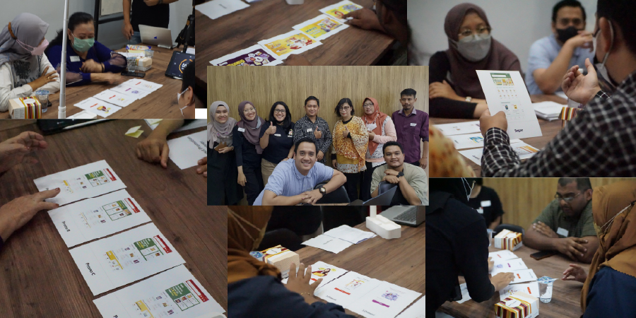

Problem Statement
KitaBeli is focusing on the market that isn’t taken from big cities with users who are already very familiar with using mobile phone, but on the contrary, 2nd tier cities in Indonesia. Many of them isn’t tech savvy because most of them are housewives/elders (our user), so there are many terms/components commonly used in an application that they don’t understand and. This is where the project overview that we want to start, we want to create a user friendly and accessible design system for our user from any background.
Start with Group Discussion (Card Sorting)

We begin by holding group discussion forums in two cities that have many users of the KitaBeli app, namely Solo and Malang. This group discussion uses the card sorting method, and our goal is to understand the user's behavior, their interest in viewing the user interface, what tendencies they choose in the application, what interests they pursue, and what voice of tone is appropriate.
Key Takeaways
• Users identify the application service from what is displayed at the beginning.Users identify the application service from what is displayed at the beginning.
• The existence of category icons provides an overview for users regarding what products sold in the application.
• For users, people's picture is more interesting than illustration in promotion.
• The existence of Kitabeli branding is also important for users.
• User wants big and thick font (familiarity and easy to read).
• The readability of the content is more considered by the user compared to the aesthetics of the color tone.
• Navigation must be visible and clear, No Tabbing, All information can be accessed in one page (Familiarity with scrolling).
Design Fundamental
Color

In addition to considering aesthetics, it is also necessary to consider the branding colors already owned by KitaBeli as a brand, and making some colors play a role in the application, so that when users see it they can understand the hierarchy of information as well.
Typography

Based on the data obtained, users tend to choose sans-serif type fonts that are clearer and can be easily read. The choice of Inter font because it is open-source and also looks good when used as a header, title, body, caption and has various font weights.
Iconography

The choice of icons has 2 visual characters, outlined and fill icons, we choose one open-source icon that can be used for the application and some options to make it ourselves to match the visual language in KitaBeli.
Spacing & Grid

We use spacing blocks following mobile phone grid system and column grid with 4/4, 3/3, and 2/2 baseline grid.
Component & Pattern
Button

We ensure that when designing buttons, users who are housewives or elders are able to understand that this is a call to action. The button can be fill type or text type and there are four conditions, namely default, press, disabled, and loading.
Field

From the existing form, we ensure that the form fields are very accessible, and that the title and instructions that the user should take when presented with the form are also clear.
Header

We follow the default settings of smartphones, and there is a need for the search function to be located in the header, ensuring that when users first onboard the app, they are able to find whatever they need.
Sheet

We use bottom sheets for some notifications and also for forms that require a larger area, making it more usable.
Other Components

Another components in KB Design System
Experiment of Implementation

Experiment with a new KB Design System.